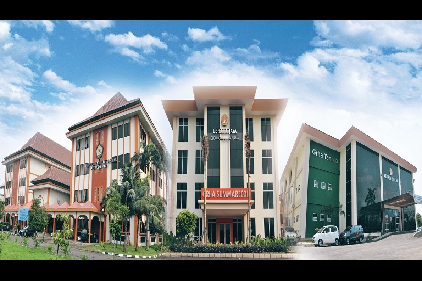

Saya adalah sosok yang percaya bahwa setiap momen dalam hidup membentuk gambaran penuh keunikan dan keberagaman
yang membuat kita seperti puzzle yang belum selesai.
Saya yosi pratama, dan dalam relung-relung cerita singkat ini,
saya ingin mengajak Anda untuk melihat sebagian dari potret hidup saya.
Sejak kecil, saya selalu gemar menjelajahi dunia di sekitar saya.
Setiap jalan yang belum dijamah adalah undangan untuk penemuan,
dan setiap pertualangan membawa cerita yang berharga.
Dari hal sederhana seperti merasakan kebeersamaan menyusuri kota bersama teman-teman
hingga petualangan luar biasa di tempat-tempat jauh, semuanya telah membentuk siapa saya saat ini.
Foto History
Gambar diatas merupakan bukti sedikit pertualang bersama teman-teman saya dalam mencari jati diri dan sebagian dari jejak
pertualangan saya yang telah dilewati untuk menjadi saya diri saya saat ini dan kedepannya.
Pendidikan
Perjalanan pendidikan yang saya jalani saat ini di Universitas Bhayangkara Jakarta Raya
Saya ingin berbagi sedikit tentang perjalanan pendidikan saya di Universitas Bhayangkara Jakarta Raya,
di mana setiap langkah membentuk cerita berharga dalam perjalanan hidup saya.
Sebagai mahasiswa di Universitas Bhayangkara Jakarta Raya,
saya merasa bangga menjadi bagian dari lingkungan yang mendukung pertumbuhan dan pemberdayaan.
Saya yakin bahwa investasi dalam pendidikan ini akan membawa dampak positif bagi masa depan saya
dan masyarakat di sekitar saya.

Foto Kampus Universitas Bhayangkara Jakarta Raya
Saya sedang menjalani pembelajaran jenjang S1 di fakultas ilmu komputer di Universitas Bhayangkara.
Ketika saya memutuskan untuk bergabung dengan Fakultas Ilmu Komputer,
saya tahu bahwa saya memasuki dunia yang penuh dengan inovasi dan tantangan.
Mata kuliah awal membawa saya memahami dasar-dasar pemrograman,
di mana barisan kode pertama saya adalah langkah menuju pintu gerbang tak terbatas dari dunia digital.
dan di mana logika dan kreativitas berpadu untuk memecahkan masalah.
Saya tertantang untuk merancang solusi yang efisien, memahami kompleksitas komputasi,
dan melatih keterampilan pemecahan masalah yang sangat berharga.
Pengalaman
Kerja Praktik Di Perpustakaan Amir Machmud Kementerian Dalam Negeri
Saya ingin berbagi kisah menarik tentang perjalanan saya sebagai Asisten IT Sistem Perpustakaan di Perpustakaan Amir Machmud Kementerian Dalam Negeri.
Pengalaman ini membawa saya melintasi dunia teknologi dan literasi,
memadukan keduanya dalam hal baru yang luar biasa.
Saya mempelajari tentang manajemen basis data, sistem perpustakaan terintegrasi,
dan sistem keamanan data. Membantu dalam mengelola katalog buku digital,
mengoptimalkan pencarian online, dan memastikan bahwa anggota perpustakaan dapat dengan mudah mengakses sumber informasi.
Foto Kegiatan Pengalaman
Gambar diatas merupakan kegiatan saat saya ikut serta dalam acara karya tulis ilmiah
yang di selenggarakan oleh perpustakaan amir machmud Kementerian Dalam Negeri.
Tidak hanya itu Selama kerja praktik, saya terlibat dalam memastikan perpustakaan berjalan lancar secara teknis.
Saya merespons permintaan dukungan teknis dari anggota perpustakaan dan mengatasi masalah yang muncul,
mulai dari masalah sistem yang ada hingga akses e-book. Dalam proses ini,
saya tidak hanya memperdalam pemahaman saya tentang sistem,
tetapi juga belajar tentang pentingnya respons cepat dalam pelayanan publik.
Salah satu puncak pengalaman saya adalah ketika saya membantu mengadakan pelatihan bagi staf perpustakaan
tentang penggunaan sistem manajemen perpustakaan.
Melihat mereka mengatasi hambatan dan semakin mahir dalam teknologi adalah salah satu kepuasan terbesar bagi saya.
Selain itu, saya diberi kesempatan untuk terlibat dalam proyek perancangan sistem repository pada platform perpustakaan amir machmud Kementerian Dalam Negeri.
Ini melibatkan pekerjaan tim dalam merancang antarmuka yang ramah pengguna,
memastikan keamanan data, dan menghadirkan pengalaman digital yang tak terlupakan bagi anggota perpustakaan.
Pengalaman sebagai Asisten IT Sistem Perpustakaan di Amir Machmud telah memperluas wawasan saya tentang kontribusi teknologi
terhadap dunia literasi dan pendidikan. Saya menyadari bahwa meskipun perpustakaan memiliki akar tradisional,
integrasi teknologi adalah kunci untuk menjembatani kesenjangan dan membuat informasi lebih mudah diakses.
Mengakhiri kerja praktik ini, saya merasa bangga karena telah memberikan kontribusi nyata
dalam memajukan pengelolaan perpustakaan yang lebih efisien dan modern.
Saya membawa pulang tidak hanya keterampilan teknis,
tetapi juga semangat untuk terus mendukung kemajuan perpustakaan sebagai pusat pengetahuan dan inspirasi.
Pengalaman ini telah memberi saya wawasan berharga tentang bagaimana teknologi dan literasi dapat bersinergi,
menciptakan ruang yang lebih inklusif dan cerdas bagi masyarakat.
Saya yakin jejak saya di dunia digital perpustakaan akan terus memberi pengaruh positif,
dan saya sangat berterima kasih atas kesempatan yang luar biasa ini.